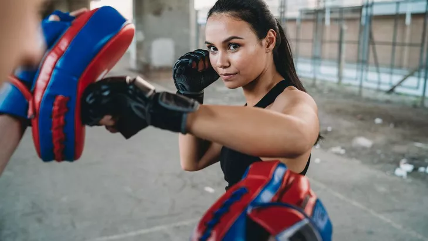

Lately, I like this sport. Why do i do this sport? because I want to loss my weight, practicing self-defense and also more heathier. I have been doing this for 1 month, its so have fun even my body feels broke, specificly on my fingers arm. lol. I will show you what sport its.

Muay Thai, which translates to “Thai Boxing”, is the national sport of Thailand. It is a martial art with roots originating from military use dating back to around the 13th century during the time of the Sukhothai Kingdom. Muay Thai is known as the “Art of 8 limbs” because it makes use of 8 points of contact namely, punches, elbows, knees and kicks. This differs it from other stand-up combat sports such as boxing (2 points - fists) and karate (4 points - fists and feet). Today, Muay Thai is practised and competed not only in Thailand, but also all around the world.
Learning a real striking art, like Muay Thai, uses up even more energy, and it’s an effective way to manage your weight. You burn up to 1,000 calories for every hour spent on the mat, which gives you more leeway as far as your diet is concerned. The average person only needs about 2000 calories daily, so burning half of that during an hour-long training session allows for a less restrictive diet. Some people are even able to stay in excellent shape by only training and not worrying much about what they eat.
Muay Thai is more than an effective way to burn calories and lose weight. Also known as the ‘Art of Eight Limbs’
- 


it’s arguably the most effective striking art ever developed, and Muay Thai fighters have enjoyed lots of success in mixed martial arts. So, what are the other benefits of training Muay Thai, you ask? Let’s take a look at some of the other rewards you get to enjoy when you give Muay Thai a try:
- Builds bigger, stronger muscles
- Increased confidence
- Practical self-defence skills
- Excellent stress relief
- Widens your social circle
- Improved health
- Builds mental toughness
Sources: